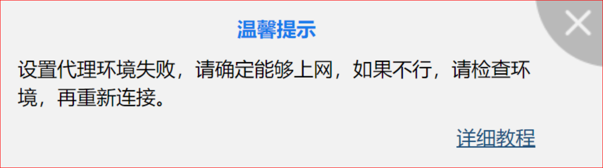
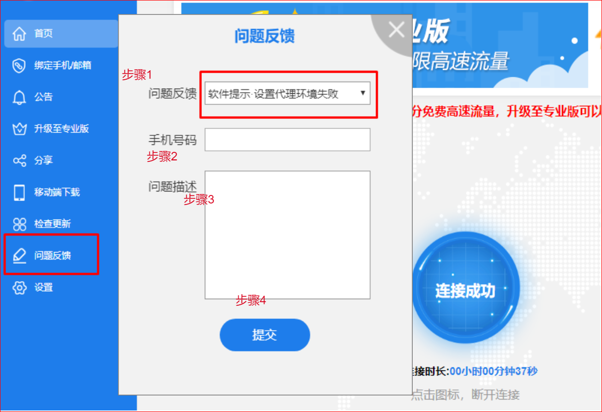
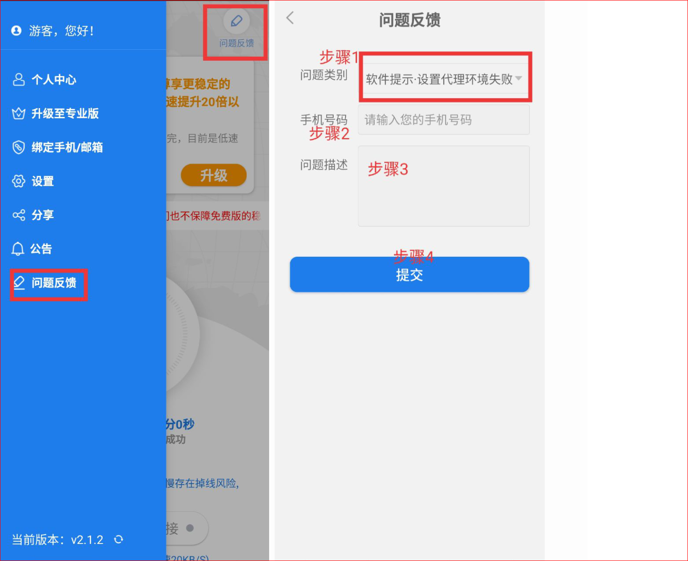

设置代理环境失败，该怎么上报问题
一、如果您在登录或使用软件的过程中，
遇到以下提示，您可以将此问题通过问题反馈上报给我们，我们收到后会尽快为您解决。

二、PC用户如何通过问题反馈上报问题

1、打开佛跳墙PC软件，在左侧侧边栏找到【问题反馈】入口，点击进入右侧【问题反馈】页面
2、按照上图中四个步骤依次进行上报问题：
- 步骤1：首先选择问题类别中的【软件提示·设置代理环境失败】；
- 步骤2：输入您的手机号码；
- 步骤3：尽量详细的填写您遇到的问题；
- 步骤4：点击【提交】按钮，提交问题反馈。
三、APP用户如何通过问题反馈上报问题：

1、打开佛跳墙APP软件，在左侧侧边栏或首页右上角找到【问题反馈】入口，点击进入右图【问题反馈】页面
2、按照上图中四个步骤依次进行上报问题：
- 步骤1：首先选择问题类别中的【软件提示·设置代理环境失败】；
- 步骤2：输入您的手机号码；
- 步骤3：尽量详细的填写您遇到的问题；
- 步骤4：点击【提交】按钮，提交问题反馈。
提交问题反馈后，技术工程师会尽快为你解决此问题，感谢您的支持，祝您翻墙愉快！